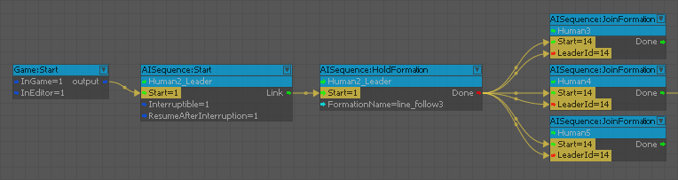

Animation
Commands the AI to move to a location and play an animation.
ApproachAndEnterVehicle
Allows the AI agent to move to the specified vehicle and to then enter the specified seat.
Bookmark
Defines a bookmark in a sequence of actions, from which the sequence will resume after being interrupted.
End
Defines the end of a sequence of actions. This frees the AI character to resume typical behaviors in their behavior tree.
HoldFormation
Create a formation by setting a formation leader (Entity input) and selecting a formation to hold to. The "Done" output port will output the LeaderID which can be used in the JoinFormation node.
See GameSDK\Scripts\AI\Formations\FormationManager.lua for implementation details.
JoinFormation
Join a formation by telling an AI character (Entity input) to join a formation leader (LeaderID input). See image below for a basic 3 man + 1 leader formation setup.

Move
Commands the AI to move to a location.
MoveAlongPath
This node is used to force the AI movement along a path created by level designer.
Shoot
Commands the AI to shoot at entity or position for a certain amount of time.
Stance
Commands the AI to change the stance.
Start
Defines the beginning and the parameters of a sequence of actions. This communicates with the AI characters behavior tree and is needed to interject and temporarily take over certain behaviors.
The "Interruptible" option defines whether the defined AI sequence can be interrupted from external events (such as encountering an enemy). You can also define whether the AI should "ResumeAfterInterruption".
VehicleRotateTurret
Allows an AI agent to align the vehicle's turret to an aiming position.
Wait
Commands the AI to wait in place for a certain amount of time.